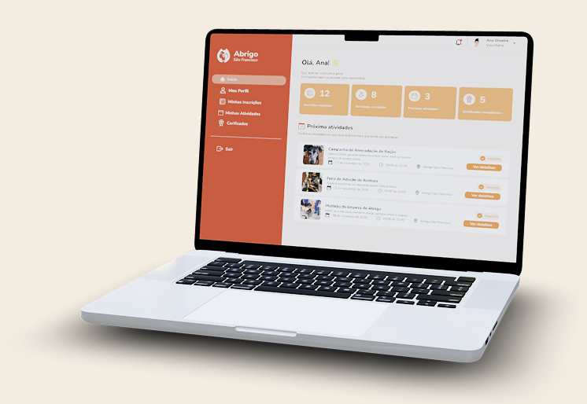
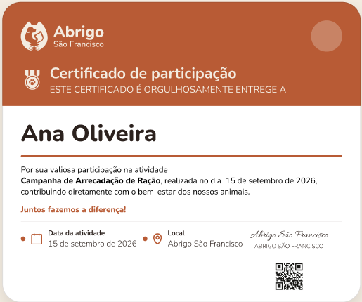

Encontre uma
forma de participar
Existem diferentes maneiras de contribuir com o trabalho do Abrigo São Francisco. Nesta página, você pode encontrar oportunidades de voluntariado, acompanhar campanhas, realizar uma doação e consultar os resultados das ações.
Escolha como deseja contribuir e acompanhe as oportunidades e iniciativas disponíveis.
VOLUNTARIADO
Encontre oportunidades abertas e participe de ações de acordo com sua disponibilidade e possibilidades de contribuição.
Ver oportunidades ↗DOAÇÕES
Apoie uma campanha ou faça uma contribuição para ajudar nas necessidades do Abrigo.
Ver campanhas ♡Atividades nas quais você pode contribuir com seu tempo, conhecimento ou habilidades.
As oportunidades disponíveis apresentam as informações necessárias para que você conheça a atividade antes de realizar sua inscrição.
Acolhimento e proteção
Um lugar seguro, rotina estável e atenção individual desde o primeiro dia.
Saiba mais →Cuidado e recuperação
Bem-estar, socialização e acompanhamento responsável para recuperar corpo e confiança.
Saiba mais →Adoção consciente
Encontros cuidadosos e orientação para construir vínculos que durem uma vida inteira.
Saiba mais →[Nome da oportunidade]
Área:
Local:
Disponibilidade: [Dias/horários]
[Descrição breve da oportunidade]
COMO PARTICIPAR DO VOLUNTARIADO
O processo foi organizado em etapas para que você possa conhecer a oportunidade, demonstrar seu interesse e acompanhar sua participação.
Ver oportunidade →Encontre
Consulte as oportunidades disponíveis e escolha aquela que mais combina com você.
Inscreva-se
Preencha sua inscrição e envie seus dados para a oportunidade escolhida.
Seleção
As inscrições são analisadas de acordo com as características e necessidades de cada oportunidade.
Participe
Após a seleção, você recebe as orientações necessárias para participar da atividade.
Acompanhe
Consulte seu histórico de participação e acompanhe sua jornada como voluntário.
Sua participação em um só lugar.
A área do voluntário reúne informações sobre sua participação e permite acompanhar sua jornada dentro dos projetos.

Consulte as atividades e participações realizadas.
Acompanhe as oportunidades nas quais você demonstrou interesse.
Visualize as atividades das quais participou.
Acesse seus certificados digitais de participação.
Conheça as oportunidades disponíveis e encontre uma forma de participar.
Quero ser voluntário ↗Registre cada etapa da sua participação.
Os certificados digitais de participação ficam disponíveis na área do voluntário, permitindo que você acompanhe e consulte os registros relacionados às atividades realizadas.

Campanhas em andamento
Acompanhe as campanhas disponíveis, conheça seus objetivos e veja como contribuir. Cada campanha apresenta sua meta e seu progresso para que você possa acompanhar sua evolução.
Arrecadação para manter a rotina de alimentação, higiene e atenção médica dos animais abrigados.
Campanha para exames, medicamentos e procedimentos veterinários essenciais para os animais.
Veja como as campanhas estão avançando.
Acompanhe a evolução das campanhas por meio das metas e dos valores arrecadados.
Acompanhe os resultados das ações.
Consulte as informações disponibilizadas pelo Abrigo São Francisco sobre campanhas, recursos e resultados.
Acompanhe informações e resultados das ações realizadas.
Consulte informações sobre a utilização dos recursos.
Acesse os documentos disponibilizados pelo Abrigo.
Confira os resultados das campanhas realizadas.
Ficou com alguma dúvida?
Consulte as oportunidades disponíveis, escolha aquela que deseja participar e envie sua inscrição pelo formulário correspondente.
As inscrições são analisadas pela nossa equipa de acordo com o perfil necessário para cada atividade.
Todo o seu histórico fica registado na Área do Voluntário.
Os certificados ficam disponíveis para download na secção "Meus certificados" da Área do Voluntário.
Basta aceder à secção "Doações" nesta mesma página e escolher o valor e método preferido.